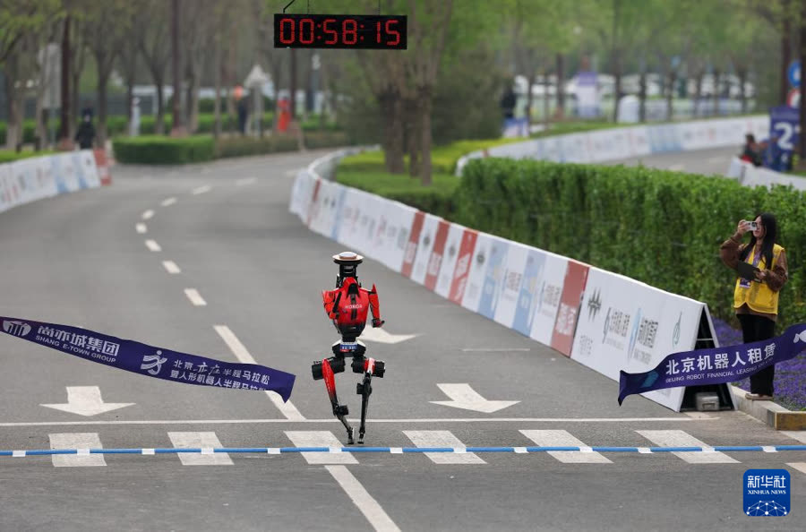
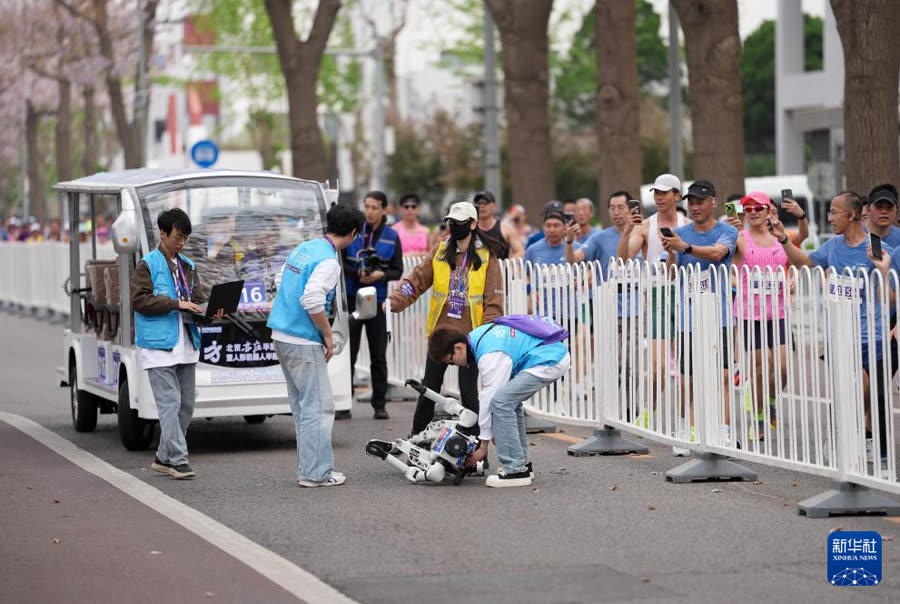

坎一身体撑不住
2025 年 4 月 19 日，北京亦庄举办了全球首次“人机共跑”的半程马拉松，20 支机器人队伍和 1 万多名跑者一起出发。
- 2 小时 40 分 42 秒
- 冠军天工 Ultra 的成绩。人类男子冠军用时约 1 小时 2 分。
- 6 支
- 20 支队伍里只有 6 支完赛。冠军途中换了电池、摔倒一次；很多机器人过热、摔倒，全程需要团队跟着：领航、换电池、喷冷却剂，甚至用胶带修补。


一年后变化很快。2026 年同一场比赛，47 支队伍跑完全程。冠军荣耀“闪电”自主导航跑出 50 分 26 秒，快过人类半马世界纪录 56 分 42 秒；它能赢，很大程度上靠专门做的液冷，给腿上的电机降温。可就在同一场比赛里，去年的冠军天工 Ultra 冲过终点后系统紊乱，一头扎进路边的草丛；宇树 H1 在终点前几米失衡倒地，被担架抬走（这两件只找到文字报道）。规则也严了：遥控组成绩乘以 1.2，自主组人工干预超过 3 次就按遥控算。
来源：新华网，2025-04-19；新华网，2025-04-21（6 支完赛）；澎湃新闻，2026-04-19；新京报，2026-04-19；《科创板日报》，2026-04-19（冲线后倒下、液冷）。人类男子半马世界纪录 56 分 42 秒（基普利莫，2025 年 2 月）；部分报道写的 57 分 20 秒有误。
跑得快，不等于撑得住。一场比赛只有一两个小时，身后还跟着一整支团队；要在家里、医院、政务大厅连续工作几个月，是另一回事。
我们自己的实验走出实验室：海蚀洞里的 42 天
2025 年，我们团队三次登上烟台长岛的大黑山岛，在龙爪山下的海蚀洞里做多架旋翼无人机的穿越实验（与合作单位的无人艇协同），前后累计 42 天。
- 电池续航
- 电机带动螺旋桨
- 传感器激光雷达 · 相机
- 定位卫星定位 · 惯性导航
- 计算单元机载电脑
整机像一串串联电路：任何一环出问题，整台就停。人扭了脚还能一瘸一拐走回家，机器人目前做不到。到了海上，每一环都被考验：
- 没有定位
- 动捕、高精度 GPS 都用不上，只能靠机上传感器自己算位置。
- 海水和盐
- 浪花打在相机和雷达上，视觉和雷达频频失效；岛离大陆 17 公里，海水盐度高，螺旋桨、电机被腐蚀。
- 风和浪
- 正赶上季风转换，大风大浪；洞口又窄，飞机几乎没有容错。
真实的代价：我们的旋翼无人机每架都加装了浮筒，就是防着掉进海里，可还是数次坠海：捞上来、拆开、烘干、修好，再飞。花絮里那句“飞机掉海×2”“又开始抢救飞机”，就是我们的日常。经历很多次炸机和反复调试，才完成多机穿越海蚀洞。


海岛很美，这是很难忘的一段工程记忆。它也让我明白：今天的机器人身体，离“自己在外面长期干活”还很远。
讲者备注：来源与备用例子
来源：国家重点研发计划课题四《2025 年度进展报告》4.3 节：2025-08-23 至 08-29、09-07 至 09-29、11-03 至 11-14 三次赴大黑山岛，累计 42 天；距大陆 17 公里。“视觉和雷达频频失效”“飞机数次坠海”来自讲者硕博连读汇报的讲稿；“洞口窄”“经历 n 次炸机”来自花絮字幕（“飞机掉海×2”在 1 分 05 秒前后，“终于成功完成多机穿越海蚀洞”在 1 分 20 秒前后）。
分寸：我们的平台是旋翼无人机；无人艇是合作单位研制的，只说“和合作单位的无人艇协同”，不把无人艇说成我们的。年度进展报告里的“防水、防撞、防腐蚀三重防护”“无碰撞穿越”写的是无人艇集群，不再说。五类部件是通用说法，不报型号（报告里的 UM982 定位模块、Mid-360 激光雷达是无人艇的配置）。上一版的“打开舱盖”照片是无人艇，已撤下。
备用例子：修一次 3 万元（一位用户 20 万元买的人形机器人过门槛摔倒，髋关节减速器形变，换模组、全身校准，3 万元、10 天；Tech星球，《修一次3万块》，2026-03-05，个案）；Figure 机器人在宝马工厂每天 10 小时、干了 11 个月，前臂最常坏（Figure，2025-11-19，公司自述）。
在岛上，我们几个人就是这些机器人的“医院”：哪里坏了，自己拆、自己修。可要让机器人在社会里长期干活，不能每台身后都跟一个研发团队。
汽车能进入社会，靠的不只是车造得好，还因为有加油站、修车厂和驾校。机器人也需要这些。有意思的是，2025 年到 2026 年，这些东西在中国已经陆续冒出了雏形：
| 汽车有 | 机器人需要 | 已经出现的雏形 |
|---|---|---|
| 加油站、充电桩 | 能源站就近补能、换电 | 优必选 Walker S2 能 3 分钟内自己换电池（厂商称可 7×24 小时工作）。2026 世界人形机器人运动会的“机器人之家”设了 200 个充电柜，可同时充至少 1200 块电池。 |
| 修车厂、4S 店 | 机器人医院诊断、维修、更换零件 | 北京亦庄 Robot Mall 2025 年 8 月开业，三层是维保区。京东推出“机器人救护车”，承诺 1 分钟响应、2 小时上门、当日修好，全国 8 个维修中心。 |
| 驾校、驾照 | 机器人学校上岗前的训练和认证 | 全国运营中的具身智能训练场超过 70 个，另有 46 个在规划或建设。人社部 2026 年 9 月发布新职业“具身智能机器人应用技术员”。但机器人本身还没有“上岗证”。 |
| 车牌、行驶证 | 身份一机一码，可追溯 | 运动会推行“一机一码、一电池一码”，30 秒完成存取登记。深圳的无人配送车实行“一车一牌”（第五章细讲）。 |
| 标准件、国家标准 | 新本体模块化，坏一处只换一处 | 首批人形机器人国家标准已发布，2027 年 4 月 1 日实施，都是推荐性标准；跨厂家通用接口还没有。 |
来源：北京发布，2026-08-13；北京市科委；北京商报；IT之家；澎湃；科技日报；北京市经信局。
雏形有了，但还在洗牌。北京首钢园 2025 年揭牌的人形机器人数据训练中心，原计划放 108 台机器人，不到 18 个月，原运营方就撤走了设备，理由是数据质量没有达到预期。
一个新物种从来不是单独变强的，它需要适合生存的环境。